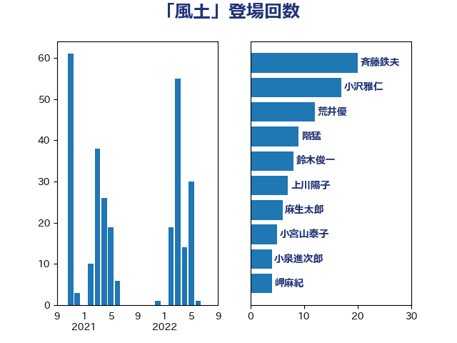

単語「風土」

| 斉藤鉄夫 | 公明党 | 20 回 |
| 小沢雅仁 | 立憲民主党 | 17 回 |
| 荒井優 | 立憲民主党 | 12 回 |
| 階猛 | 立憲民主党 | 9 回 |
| 鈴木俊一 | 自由民主党 | 8 回 |
| 上川陽子 | 自由民主党 | 7 回 |
| 麻生太郎 | 自由民主党 | 6 回 |
| 小宮山泰子 | 立憲民主党 | 5 回 |
| 小泉進次郎 | 自由民主党 | 4 回 |
| 岬麻紀 | 日本維新の会 | 4 回 |
| 熊野正士 | 公明党 | 4 回 |
| 細田健一 | 自由民主党 | 4 回 |
| 藤田文武 | 日本維新の会 | 4 回 |
| 野上浩太郎 | 自由民主党 | 4 回 |
| 須藤元気 | 無所属 | 4 回 |
| 伊藤岳 | 日本共産党 | 3 回 |
| 伊藤孝恵 | 国民民主党 | 2 回 |
| 安江伸夫 | 公明党 | 2 回 |
| 室井邦彦 | 日本維新の会 | 2 回 |
| 川田龍平 | 立憲民主党 | 2 回 |
| 柴田巧 | 日本維新の会 | 2 回 |
| 沢田良 | 日本維新の会 | 2 回 |
| 渡辺猛之 | 自由民主党 | 2 回 |
| 神津たけし | 立憲民主党 | 2 回 |
| 篠原孝 | 立憲民主党 | 2 回 |
| 萩生田光一 | 自由民主党 | 2 回 |
| 赤羽一嘉 | 公明党 | 2 回 |
| 金子恭之 | 自由民主党 | 2 回 |
| 鈴木義弘 | 国民民主党 | 2 回 |
| 阿部知子 | 立憲民主党 | 2 回 |
| ながえ孝子 | 無所属 | 1 回 |
| 中島克仁 | 立憲民主党 | 1 回 |
| 中川郁子 | 自由民主党 | 1 回 |
| 加藤竜祥 | 自由民主党 | 1 回 |
| 加藤鮎子 | 自由民主党 | 1 回 |
| 勝目康 | 自由民主党 | 1 回 |
| 勝部賢志 | 立憲民主党 | 1 回 |
| 北神圭朗 | 無所属 | 1 回 |
| 古川元久 | 国民民主党 | 1 回 |
| 安達澄 | 無所属 | 1 回 |
| 小沼巧 | 立憲民主党 | 1 回 |
| 山田俊男 | 自由民主党 | 1 回 |
| 岡本あき子 | 立憲民主党 | 1 回 |
| 岸田文雄 | 自由民主党 | 1 回 |
| 後藤茂之 | 自由民主党 | 1 回 |
| 掘井健智 | 日本維新の会 | 1 回 |
| 新垣邦男 | 立憲民主党 | 1 回 |
| 有村治子 | 自由民主党 | 1 回 |
| 末松信介 | 自由民主党 | 1 回 |
| 本村伸子 | 日本共産党 | 1 回 |
| 柳ヶ瀬裕文 | 日本維新の会 | 1 回 |
| 河西宏一 | 公明党 | 1 回 |
| 河野義博 | 公明党 | 1 回 |
| 泉田裕彦 | 自由民主党 | 1 回 |
| 浅野哲 | 国民民主党 | 1 回 |
| 浜田聡 | NHK党 | 1 回 |
| 牧島かれん | 自由民主党 | 1 回 |
| 田中英之 | 自由民主党 | 1 回 |
| 田村貴昭 | 日本共産党 | 1 回 |
| 矢倉克夫 | 公明党 | 1 回 |
| 石井苗子 | 日本維新の会 | 1 回 |
| 石橋通宏 | 立憲民主党 | 1 回 |
| 神谷裕 | 立憲民主党 | 1 回 |
| 福田昭夫 | 立憲民主党 | 1 回 |
| 福田達夫 | 自由民主党 | 1 回 |
| 篠原豪 | 立憲民主党 | 1 回 |
| 緑川貴士 | 立憲民主党 | 1 回 |
| 美延映夫 | 日本維新の会 | 1 回 |
| 舟山康江 | 国民民主党 | 1 回 |
| 芳賀道也 | 国民民主党 | 1 回 |
| 菅家一郎 | 自由民主党 | 1 回 |
| 藤巻健太 | 日本維新の会 | 1 回 |
| 遠藤敬 | 日本維新の会 | 1 回 |
| 重徳和彦 | 立憲民主党 | 1 回 |
| 野田国義 | 立憲民主党 | 1 回 |
| 野田聖子 | 自由民主党 | 1 回 |
| 高橋光男 | 公明党 | 1 回 |
| 高良鉄美 | 無所属 | 1 回 |
| 高野光二郎 | 自由民主党 | 1 回 |